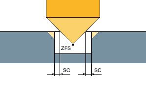

Machining type, roughing vortex milling
Roughing is performed by moving the milling cutter along a circular path.
While performing this motion, the milling cutter is continuously fed into the plane. Once the milling cutter has traveled along the entire slot, it returns to its starting point, while continuing to move in a circular fashion. By doing this, it removes the next layer (infeed depth) in the Z direction. This process is repeated until the set slot depth plus the finishing allowance has been reached.

① | Vortex milling: Down-cut or up-cut |
② | Vortex milling: Down-cut-up-cut |
Supplementary conditions for vortex milling
Roughing
1/2 slot width W – finishing allowance UXY ≤ milling cutter diameter
Slot width
minimum 1.15 x milling cutter diameter + finishing allowance
maximum, 2 x milling cutter diameter + 2 x finishing allowance
Radial infeed
minimum, 0.02 x milling cutter diameter
maximum, 0.25 x milling cutter diameter
Maximum infeed depth ≤ cutting height of milling cutter
Please note that the cutting height of the milling cutter cannot be checked.
The maximum radial infeed depends on the milling cutter.
For hard materials, use a lower infeed.
Machining type, roughing plunge cutting
Roughing of the slot takes place sequentially along the length of the groove, with the milling cutter performing vertical insertions at the machining feedrate. The milling cutter is then retracted and repositioned at the next insertion point.
The milling cutter moves along the length of the slot, at half the infeed rate, and inserts alternately at the left-hand and right-hand walls.
The first insertion motion takes place at the slot edge, with the milling cutter inserted at half the infeed, less the safety clearance (if the safety clearance is greater than the infeed, this will be on the outside). For this cycle, the maximum width of the slot must be less than double the width of the milling cutter + the finishing allowance.
Following each insertion, the milling cutter is lifted by the height of the safety clearance at the machining feedrate. As far as possible, this occurs during what is known as the retraction process, i.e. if the milling cutter's wrap angle is less than 180°, it is lifted at an angle below 45° in the opposite direction to the bisector of the wrap area.
The milling cutter then traverses over the material in rapid traverse.

Supplementary conditions for plunge cutting
Roughing
1/2 slot width W - finishing allowance UXY ≤ milling cutter diameter
Maximum radial infeed
The maximum infeed depends on the cutting edge width of the milling cutter.
Increment
The lateral increment is calculated on the basis of the required slot width, milling cutter diameter and finishing allowance.
Retraction
Retraction involves the milling cutter being retracted at a 45° angle if the wrap angle is less than 180°. Otherwise, retraction is perpendicular, as is the case with drilling.
Retraction
Retraction is performed perpendicular to the wrapped surface.
Safety clearance
Traverse through the safety clearance beyond the end of the workpiece to prevent rounding of the slot walls at the ends.
Please note that the milling cutter’s cutting edge cannot be checked for the maximum radial infeed.
Machining type, rough finishing
If there is too much residual material on the slot walls, unwanted corners are removed to the finishing dimension.
Machining type, finishing
When finishing walls, the milling cutter travels along the slot walls, whereby just like for roughing, it is again fed in the Z direction, increment by increment. During this process, the milling cutter travels through the safety clearance beyond the beginning and end of the slot, so that an even slot wall surface can be guaranteed across the entire length of the slot.
Machining type, edge finishing
Edge finishing is performed in the same way as finishing, except that the last infeed (finish base) is omitted.
Machining type, finishing base
When finishing the base, the milling cutter moves backwards and forwards once in the finished slot.
Machining type, chamfering
Chamfering involves breaking the edge at the upper slot edge.
Geometries when chamfering inside contours
| Note |
During chamfering, the end mill behaves like a centering tool with a 90° tip angle. |
| Note |
The following error messages can occur when chamfering inside contours:
|
Additional supplementary conditions
Finishing
1/2 slot width W ≤ milling cutter diameter
Edge finishing
Finishing allowance UXY ≤ milling cutter diameter
Chamfering
The tip angle must be entered into the tool table.